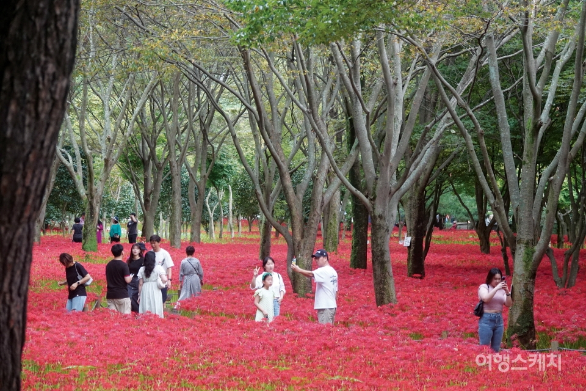

Event
참여 이벤트

walking trail
상사화 꽃길
걷기만 해도 힐링 되는 상사화 꽃길

국보 · 천문 유적
첨성대
동양에서 가장 오래된 천문대로, 신라 선덕여왕 때 세워진 362개의 돌로 쌓인 석조 건물입니다.

사적 · 고분군
대릉원
신라 왕족과 귀족의 무덤이 모인 고분 공원. 초록빛 잔디 위로 솟은 능이 이루는 풍경은 경주만의 독특한 장관입니다.

트레킹 · 자연
경주 남산
야외 박물관이라 불리는 남산. 산 전체에 100여 곳의 절터와 불상이 숨어 있습니다.